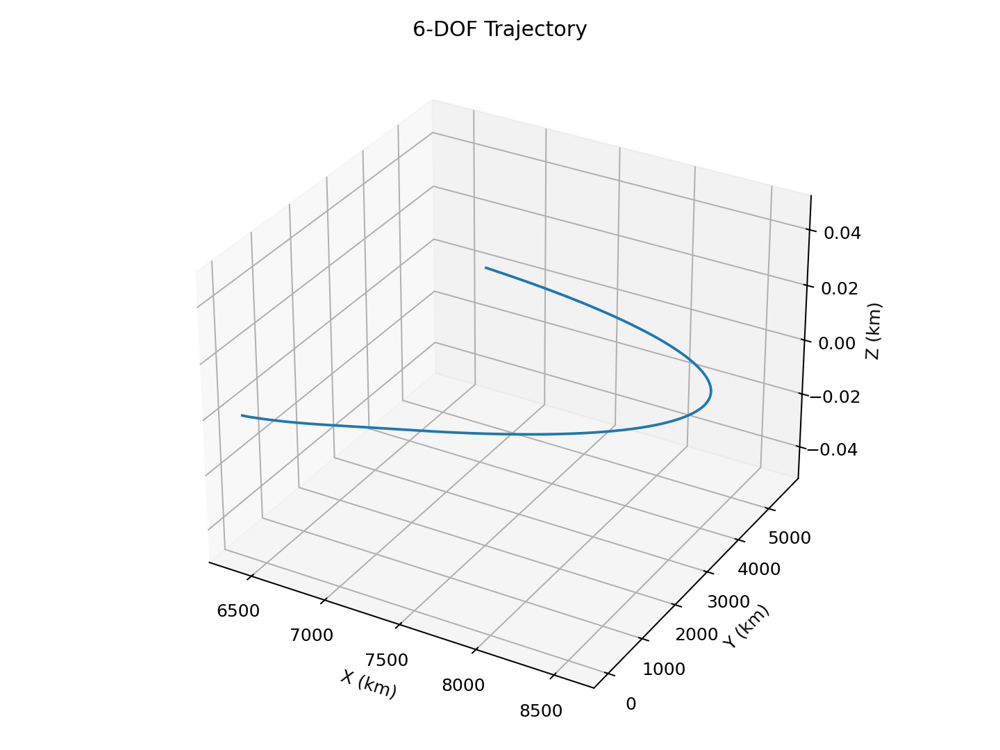
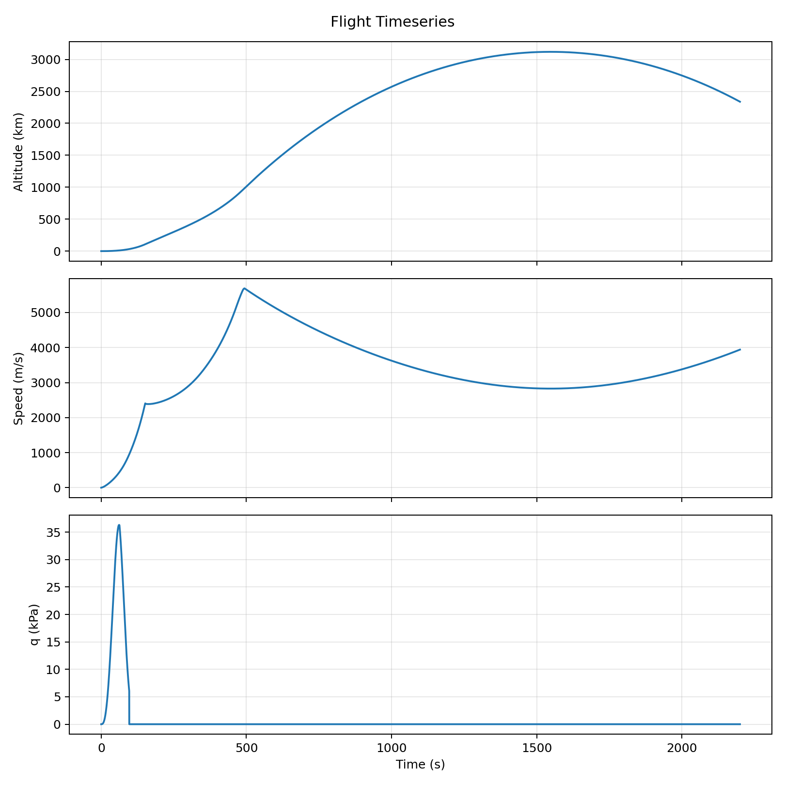
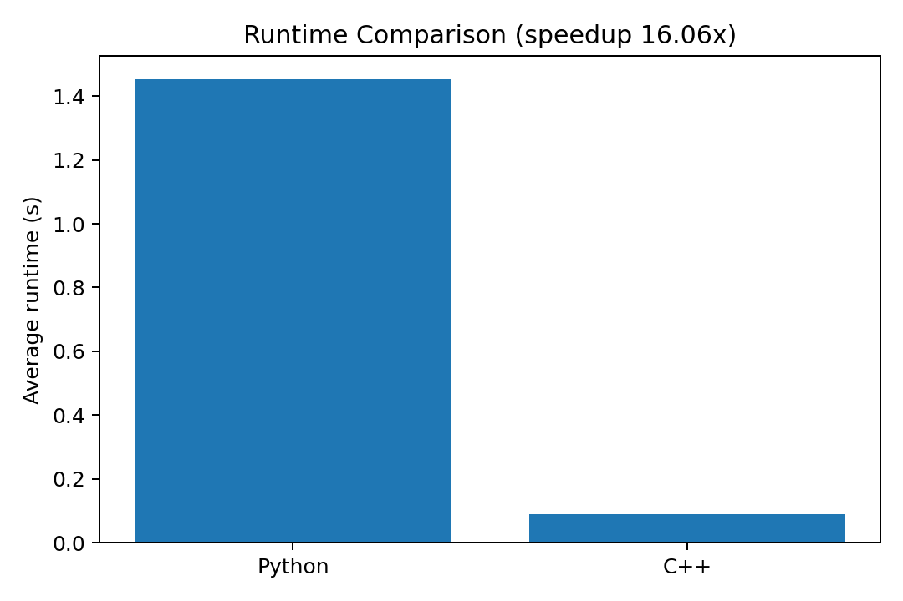

Multi-Stage Rocket Dynamics Simulator
C++/Python flight-systems simulator with RK4 propagation, PID+TVC control, staging logic, and validation gates.
- <0.001% trajectory error vs baseline
- Max-Q: 36.32 kPa
- 0.12° steady-state attitude error
Fall 2026 SWE Portfolio
C++ systems engineer focused on simulation, distributed infrastructure, and performance-critical software.
C++/Python flight-systems simulator with RK4 propagation, PID+TVC control, staging logic, and validation gates.
GPU Monte Carlo engine optimized for memory access and occupancy using Nsight-driven tuning.
Production-oriented backend work across ETL, validation, lock-free pipelines, and reliability debugging.
Built a multi-stage launch simulator to model ascent through reentry with deterministic integration and explicit event transitions.


Built a high-throughput simulation engine in C++/CUDA to remove CPU bottlenecks in large Monte Carlo workloads.

Designed backend systems for reliability, correctness, and low-latency operation under real workloads.